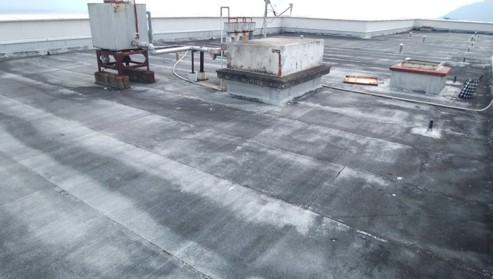
屋上（R階）全景
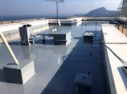
屋上（R階）全景
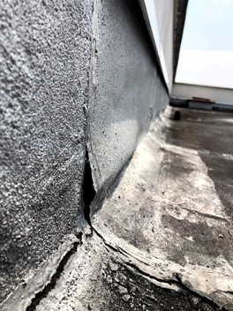
屋上（R階）近影
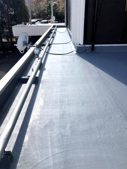
屋上（2階）全景
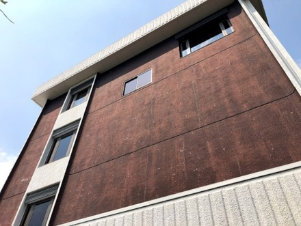
外壁（東面）全景
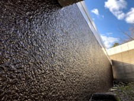
外壁近影
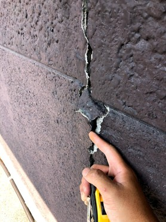
外壁（東面）近影
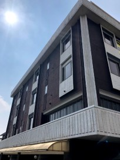
外壁（北面）全景
施工概要
| 施工地域 | 大分県別府市 |
|---|---|
| 建物用途 | 宿泊施設（ホテル） |
| 施工内容 |
屋上防水工事
外壁塗装
鉄部塗装
付帯部補修
|
施工前の課題
- 冬季寒冷地・暴風頻発の高地という厳しい気象条件
- 屋上防水層の劣化による雨漏り（複数箇所）
- 外壁の亀裂・塗膜劣化・退色
- 鉄部の腐食および欠損
- 防水未施工箇所からの浸水
- 24時間365日営業中の施設での施工制約
施工条件
- 施設は昼夜を問わず営業中のため、利用者への騒音・動線への常時配慮が必須
- 資材搬入・搬出経路に制限あり
- 寒冷期工事を前提とした資材の選定・保管・施工
調査結果
屋上（R階）防水層の切開調査を行った結果、既存アスファルト防水内部に想定以上の水分滞留が確認されました。加えて、パラペット周囲のコーキングは広範囲にわたり劣化・破断しており、これらが浸水の主原因であると判断しました。
2階屋上においても同様に防水層内部への浸水が確認され、既存防水層の構成や劣化状況が場所により異なることが判明しました。
対応内容
- 屋上防水改修（ウレタン塗膜防水）
R階：通気緩衝工法（絶縁工法）／2階：ポリマーセメント系塗膜防水 - パラペット周囲コーキング全面撤去・打替え
- 外壁クラック補修および塗装
- 外壁・鉄部等付帯部において寒冷期条件を考慮した塗装仕様を採用
- 防水未施工箇所への新規防水施工
施工のポイント
- 現地確認により雨漏り多発・既存防水層の全撤去困難が判明したため、当初提案の密着工法から通気緩衝工法へ変更
- 内部水分の排出を考慮した防水仕様の選定
- R階・2階それぞれの劣化状況と既存防水仕様に応じた工法の使い分け
- 営業中施設における作業時間・動線・資材搬出入ルートの最適化
- 必要箇所と不要箇所を明確に分けた施工範囲設定によるコスト最適化
施工写真
調査・劣化状況
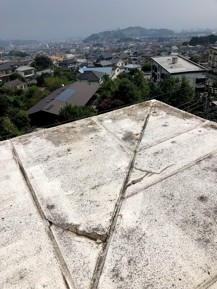
R階 パラペット天端
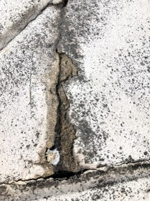
R階 パラペット天端（近影）
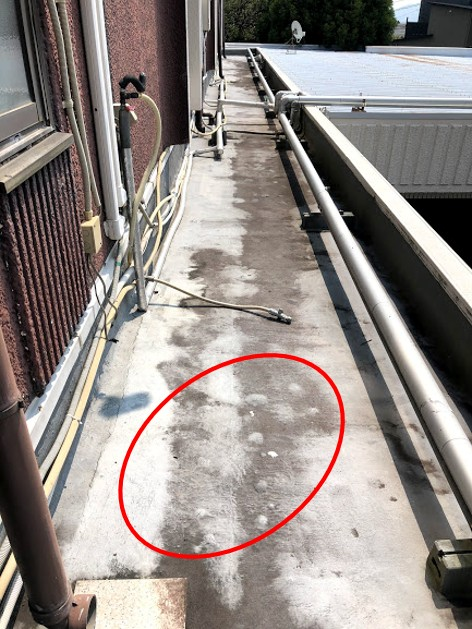
2階屋上全景
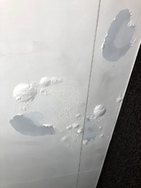
1階 漏水箇所（近影）
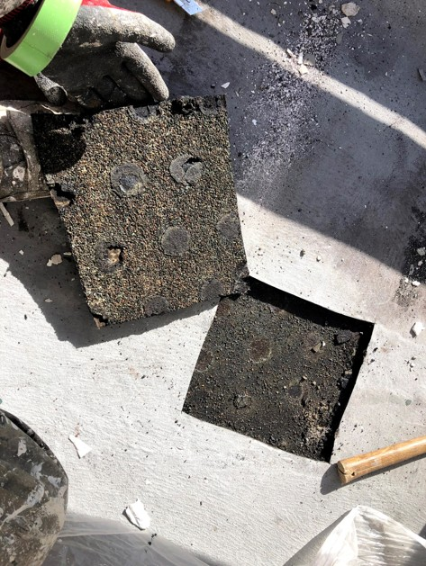
2階屋上 切開調査
防水施工
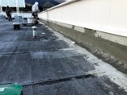
立上り撤去後 下地調整
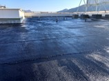
防水 下塗り施工後
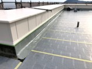
通気緩衝シート施工後
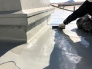
ウレタン塗膜防水 中塗り2回目
外壁・鉄部
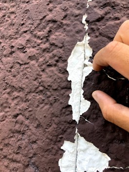
外壁近影
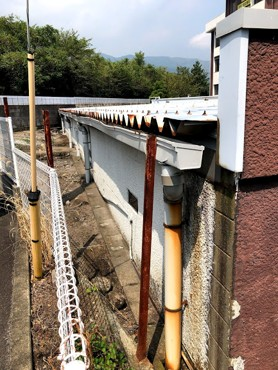
折板屋根部近影①
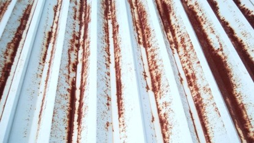
折板屋根部近影②
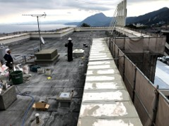
パラペット天端補修後 下地調整
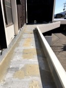
2階屋上 下地補修
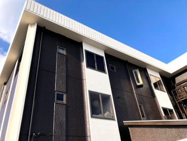
外壁（北面）全景 施工後
付帯・その他
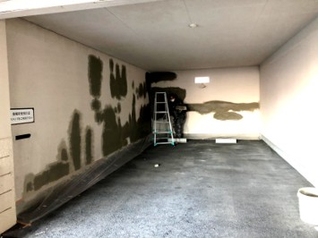
駐車場内 下地調整
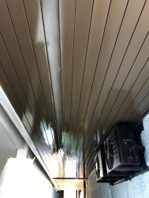
駐車場内天井・室外機塗装後
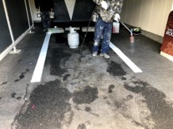
駐車場 ロードカラー施工状況
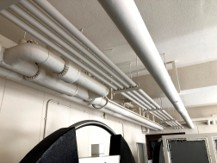
駐車場内天井 施工後
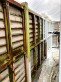
機械室 中塗り施工状況
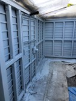
機械室 上塗り施工後
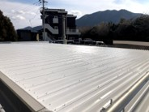
駐車場折板屋根 上塗り施工後
施工後の状況
- 屋上防水層の再構築により雨漏りを解消（配管由来の漏水の発見と対策も含む）
- 外壁および付帯部の美観回復と耐久性の向上
- 鉄部の防錆処理により長期的な劣化を抑制
今後のメンテナンス提案
- 防水層トップコートは約5年周期での塗替えを推奨
- 2階既存防水層の残存部については、中長期的に撤去改修または絶縁改修を検討
- コーキング部の定期点検を実施
本工事は営業中の宿泊施設における施工であり、施工計画および施工の両面で常時配慮が求められる案件でした。
事前調査において防水層内部への水分滞留が確認されたため、当初提案から工法を変更し、通気緩衝工法を採用しています。
また、施工中は動線管理および作業時間の調整を行い、施設運営への影響を最小限に抑えながら工事を進めました。
単なる補修にとどまらず、劣化状況に応じた最適な施工方法の選定を行った事例です。